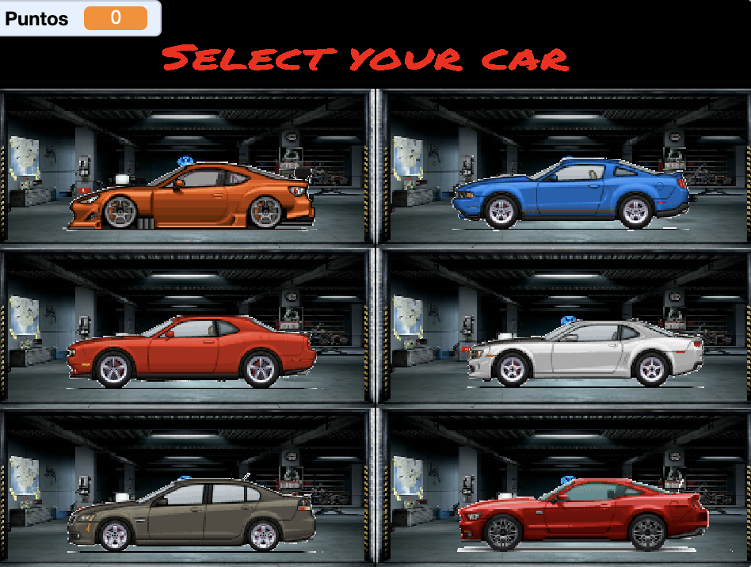
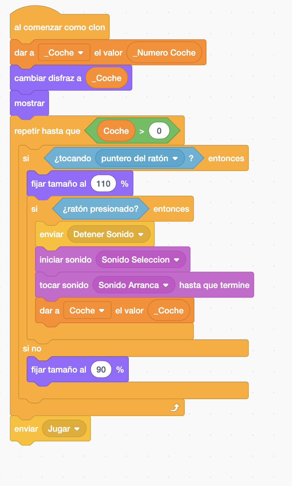
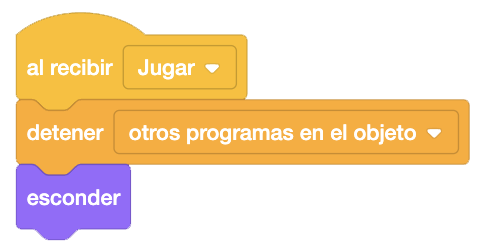
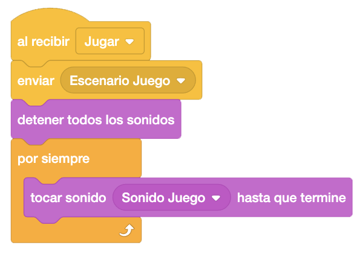
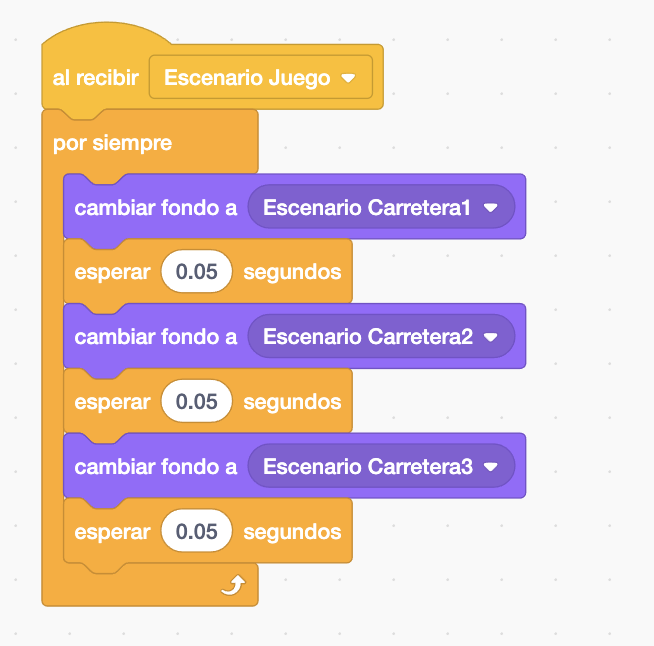
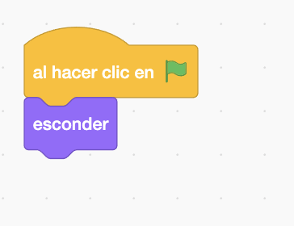
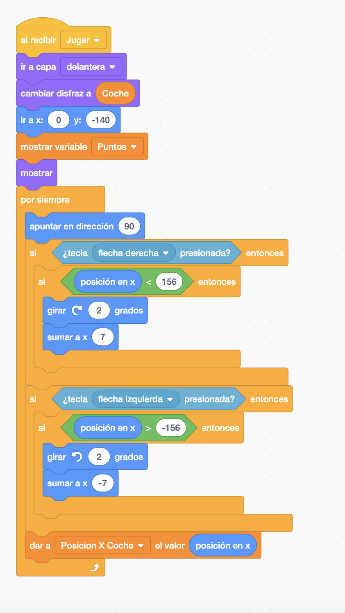
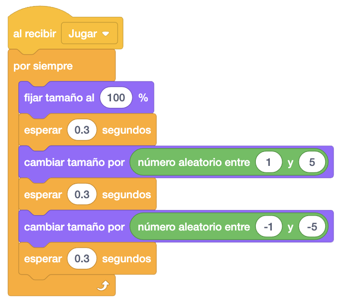

Para este juego necesitaremos un coche visto lateralmente, con 6 disfraces que nos servirá para elegir el
coche con el que jugaremos. Este objeto tendrá un sonido para cuando lo elijamos.
Otro objeto coche visto desde atrás (también con los seis disfraces posibles y otro más con el coche roto)
que será el coche con el que juguemos.
Otro coche más que hará de los coches que vamos adelantando.
También necesitraremos una explosión en el caso de colisionar con otro coche. Tendrá el sonido de la explosión.
Otros objetos que necesitaremos serán, papeleras y farolas que irán saliendo aleatoriamente y un objeto con
el texto de Game Over.
Añadiremos un escenario tipo garaje donde aparecerán los distintos coches que podemos elegir. Además tendremos
tres escenarios más que simularán la carretera en movimiento.
Los escenarios llevarán también tres sonidos que serán el sonido del garaje, el del juego y el del fin del
juego.
Para descargar los objetos necesarios para el juego, lo haremos desde este link. Es un archivo comprimido con 7 objetos, 4 escenarios y 3 sonidos. Lo descargaremos y lo descomprimimos en el directorio del alumno.
El juego consiste en que tenemos que elgir un coche de nuestro garaje e ir por la carretera esquivando otros
coches.
Empezaremos por poner el escenario del garaje y programando que al empezar se ponga este escenario y esté
sonando continuamente el sonido del garaje.

Ahora empezaremos a programar los coches que aparecerán en el garage.
Vamos a necesitar una variable "Puntos" que utilizaremos más tarde y otra variable "Coche" donde almacenaremos
el número del coche que hemos elegido. Ambas serán variables "Para Todos Los Objetos".
También crearemos otras dos variables "_Coche" y "_Numero Coche" para el control del número de coche que
elegimos. Ambas serán variables "Sólo Para Este Objeto".
A partir de ahora, diferenciaremos las variables que son para todos los objetos de las que son solo para el objeto donde las creamos. Las que son solo para ese objeto, las crearemos con un "_" delante del nombre de la variable.
La única variable que tendremos visible será "Puntos" que inicialmente ocultaremos. Inicializaremos a "0" las
variables "Puntos" y "Coche", y a "1" la variable "_Numero Coche".
A continuación colocaremos nuestro objeto en la primera posición y repetiremos 6 veces (ya que crearemos 6
coches) el crear clon e ir colocandolo en la pantalla. Iremos sumando 1 a la variable "_Numero Coche" para
identificar cada uno de ellos.


Ahora, al crear cada clon, daremos a la variable "_Coche" el valor de "_Numero Coche" para que cada coche
tenga almacenado en esta variable el número de coche que lo identiofica (dsel 1 al 6). Cambiaremos al disfraz
que lo identifica con este valor y lo mostraremos.
A continuación haremnos un bucle hasta que seleccionemos uno de los coches en el que haremos lo siguiente.
Si pasamos por encima de cualquier coche, lo agrandaremos al 110% y si no, lo dejaremos en el 90%.
Además, si al pasar por encima, pinchamos en el coche, enviaremos un mensaje "Detener Sonido" para quitar el
sonido del garaje, haremos el sonido de selección del coche y a continuación el sonido de arranque, esperando
a que termine.
Daremos a la variable "Coche" el número de coche seleccionado, que lo tenemos guardado en la variable
"_Coche".
Una vez seleccionado el coche, que hará que nos salgamos del bucle, mandaremos el mensaje "Jugar"

Añadiremos un bloque para recibir el mensaje "Jugar", donde detendremos otros programas del objeto y esconderemos los coches.

Volvemos al escenario. Al recibir el mensaje "Jugar", mandaremos un nuevo mensaje "Escenario Juego" donde haremos el movimiento de la carretera mediante los escenarios. Detendremos todos los sonidos y haremos un bucle para poner el sonido del juego hasta que termine mientras se está jugando.

También programaremos que al recibir el mensaje "Escenario Juego", iremos poniendo cada uno de los tres escenarios de la carretera, con un intervalo de tiempo.

Vamos ahora a programar el coche que nosotros vamos a manejar. Al empezar el juego, esconderemos el coche.

Crearemos una variable "Posición X Coche" donde guardaremos la posición del coche en el eje "X" en todo
momento.
Programaremos que al recibir el mensaje "Jugar", le pondremos el disfraz que nos indica la cariable "Coche"
y lo posicionamos en el centro de la parte inferior de la pantalla. Mostraremos la variable "Puntos" y el
propio objeto.
A continuación programaremos que se mueva el coche con los cursores derecha e izquierda. Haremos un bucle
donde lo primero que haremos será apuntar hacia la derecha para que el coche quede recto.
Controlaremos si pulsamos la flecha derecha para mover el coche a la derecha, controlando que no se salga de
la carretera y haciendo un pequeño giro a la derecha para hacer un efecto de amortiguación del coche.
Lo mismo si pulsamos la flecha izquierda, moveremos a la izquierda y el giro también lo haremos a la izquierda.
Finalmente, guardaremos la posición "X" del coche en la variable "Posición X Coche"

Vamos a programar otro efecto para el coche para darle mayor realismo. Volvemos a programar otra vez que al recibir el mensaje "Jugar", hacemnos un bucle donde vamos cambiando un poco el tamaño del coche de una forma aleatoria.

Un reto intyeresante que podemos añadir al juego es que las bolas las tengamos que soltar nosotros mediante una tecla y que no pueda haber más de una bola al mismo tiempo, hasta jugar un máximo de 3 bolas.
Y el juego quedaría así.

Para ver el juego terminado pulsa
aquí.
Para descargarte el juego terminado pulsa
aquí.